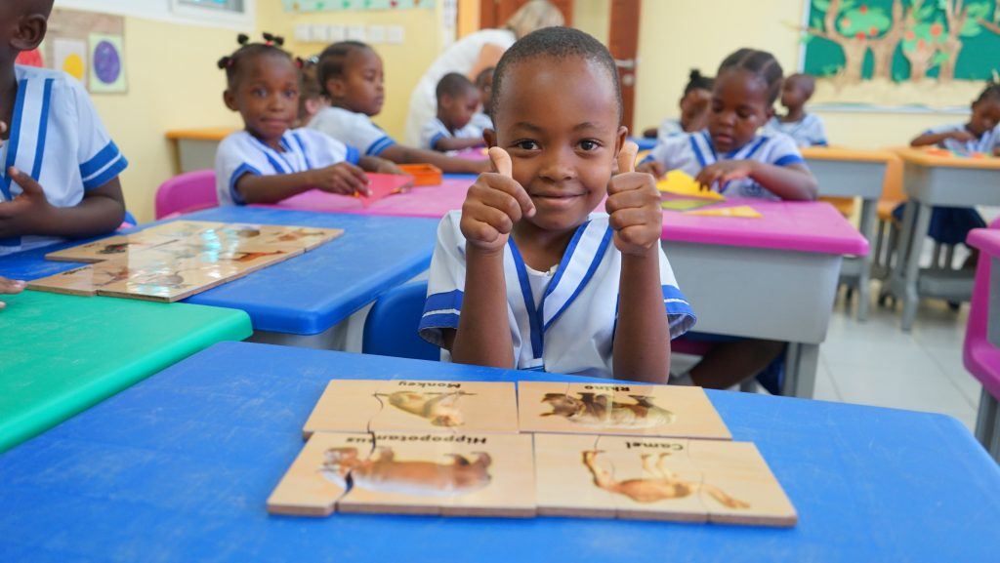

Our mission
Give children a caring, engaging start and the skills to keep learning with confidence.
Welcome to Imarika
We welcome children from Playgroup through Standard 4 at our school in Iyumbu, Dodoma, with learning shaped by curiosity, care and a strong foundation.

Who we are
Imarika Pre-Primary School serves families in Iyumbu, Dodoma. We bring early childhood and primary learning together, supporting children as they build knowledge, confidence and positive relationships.
Our work is a partnership with families. We aim to create a welcoming place where children are known, encouraged to ask questions and supported as they take on new challenges.
A journey with purpose
From a child’s first discoveries to the confidence to take on new challenges, we make space for learning, encouragement and progress at every stage.
Early learning
Children are encouraged to ask questions, try ideas and learn through play and practice.
Strong foundations
From early learning through Standard 4, children build academic and social skills at each stage.
Growing together
We value partnership with parents and guardians, creating a welcoming community around every learner.
What guides us
These are the commitments we bring to each learner and family.
Give children a caring, engaging start and the skills to keep learning with confidence.
Help every learner grow into a curious, capable and considerate member of their community.
Respect, encouragement, responsibility and a belief in each child’s ability to grow.
Why Imarika
Pre-Primary and Primary learning are offered at one school, from Playgroup through Standard 4.
Our approach values curiosity, encouragement and steady progress as children take on new learning.
We welcome conversations with parents and guardians and want families to feel informed and included.
Start a conversation
We are in Iyumbu, Dodoma. Our team can help your family understand the programs and admissions process.